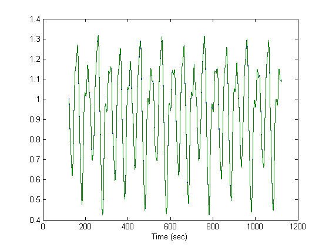

Chaotic Time Series Prediction
Chaotic time series prediction using ANFIS.
Copyright 1994-2002 The MathWorks, Inc. $Revision: 1.15 $
Overview
The Mackey-Glass time-delay differential equation is defined by
dx(t)/dt = 0.2x(t-tau)/(1+x(t-tau)^10) - 0.1x(t)
When x(0) = 1.2 and tau = 17, we have a non-periodic and non-convergent time series that is very sensitive to initial conditions. (We assume x(t) = 0 when t < 0.)
load mgdata.dat a=mgdata; time = a(:, 1); ts = a(:, 2); plot(time, ts); xlabel('Time (sec)'); ylabel('x(t)'); title('Mackey-Glass Chaotic Time Series');
Now we want to build an ANFIS that can predict x(t+6) from the past values of this time series, that is, x(t-18), x(t-12), x(t-6), and x(t). Therefore the training data format is
[x(t-18), x(t-12), x(t-6), x(t); x(t+6]
From t = 118 to 1117, we collect 1000 data pairs of the above format. The first 500 are used for training while the others are used for checking. The plot shows the segment of the time series where data pairs were extracted from.
trn_data = zeros(500, 5); chk_data = zeros(500, 5); % prepare training data start = 101; trn_data(:, 1) = ts(start:start+500-1); start = start + 6; trn_data(:, 2) = ts(start:start+500-1); start = start + 6; trn_data(:, 3) = ts(start:start+500-1); start = start + 6; trn_data(:, 4) = ts(start:start+500-1); start = start + 6; trn_data(:, 5) = ts(start:start+500-1); % prepare checking data start = 601; chk_data(:, 1) = ts(start:start+500-1); start = start + 6; chk_data(:, 2) = ts(start:start+500-1); start = start + 6; chk_data(:, 3) = ts(start:start+500-1); start = start + 6; chk_data(:, 4) = ts(start:start+500-1); start = start + 6; chk_data(:, 5) = ts(start:start+500-1); index = 118:1117+1; % ts starts with t = 0 plot(time(index), ts(index)); axis([min(time(index)) max(time(index)) min(ts(index)) max(ts(index))]); xlabel('Time (sec)'); ylabel('x(t)'); title('Mackey-Glass Chaotic Time Series');
We use GENFIS1 to generate an initial FIS matrix from training data. The command is quite simple since default values for MF number (2) and MF type ('gbellmf') are used:
fismat = genfis1(trn_data); % The initial MFs for training are shown in the plots. for input_index=1:4, subplot(2,2,input_index) [x,y]=plotmf(fismat,'input',input_index); plot(x,y) axis([-inf inf 0 1.2]); xlabel(['Input ' int2str(input_index)]); end
There are 2^4 = 16 rules in the generated FIS matrix and the number of fitting parameters is 108, including 24 nonlinear parameters and 80 linear parameters. This is a proper balance between number of fitting parameters and number of training data (500). The ANFIS command looks like this:
>> [trn_fismat,trn_error] = anfis(trn_data, fismat,[],[],chk_data)
To save time, we will load the training results directly.
After ten epochs of training, the final MFs are shown in the plots. Note that these MFs after training do not change drastically. Obviously most of the fitting is done by the linear parameters while the nonlinear parameters are mostly for fine- tuning for further improvement.
% load training results load mganfis % plot final MF's on x, y, z, u for input_index=1:4, subplot(2,2,input_index) [x,y]=plotmf(trn_fismat,'input',input_index); plot(x,y) axis([-inf inf 0 1.2]); xlabel(['Input ' int2str(input_index)]); end
This plot displays error curves for both training and checking data. Note that the training error is higher than the checking error. This phenomenon is not uncommon in ANFIS learning or nonlinear regression in general; it could indicate that the training process is not close to finished yet.
% error curves plot epoch_n = 10; tmp = [trn_error chk_error]; subplot(1,1,1) plot(tmp); hold on; plot(tmp, 'o'); hold off; xlabel('Epochs'); ylabel('RMSE (Root Mean Squared Error)'); title('Error Curves'); axis([0 epoch_n min(tmp(:)) max(tmp(:))]);
This plot shows the original time series and the one predicted by ANFIS. The difference is so tiny that it is impossible to tell one from another by eye inspection. That is why you probably see only the ANFIS prediction curve. The prediction errors must be viewed on another scale.
input = [trn_data(:, 1:4); chk_data(:, 1:4)];
anfis_output = evalfis(input, trn_fismat);
index = 125:1124;
plot(time(index), [ts(index) anfis_output]);
xlabel('Time (sec)');Prediction error of ANFIS is shown here. Note that the scale is about a hundredth of the scale of the previous plot. Remember that we have only 10 epochs of training in this case; better performance is expected if we have extensive training.
diff = ts(index)-anfis_output; plot(time(index), diff); xlabel('Time (sec)'); title('ANFIS Prediction Errors');